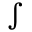
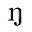
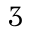
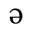

国語音韻の変遷
橋本進吉
一 音韻組織と連音上の法則
言語は、すべて一定の音（おん）に一定の意味が結合して成立つものであって、音が言語の外形をなし、意味がその内容を成しているのである。かような言語の外形を成す音は、どんなになっているかを考えて見るに、箇々の単語のような、意味を有する言語単位は、その音の形は種々様々であって、これによって、一つ一つ違った意味を有する種々の単語を区別して示しているのであるが、その音の姿を、それ自身として観察してみると、一定の音の単位から成立っているのであって、かような音の単位が、或る場合にはただ一つで、或る場合にはいくつか組合わされて、意味を有する箇々の言語単位の種々様々な外形を形づくっているのである。かような言語の外形を形づくる基本となる音の単位は、国語においては、例えば現代語の「あたま（頭）」はア・タ・マの三つ、「かぜ（風）」はカ・ゼの二つ、「すこし（少）」はス・コ・シの三つ、「ろ（櫓）」や「を（尾）」はそれぞれロ又はオの一つから成立っている。
かように、言語を形づくる基本たる一つ一つの音の単位は、単語のように無数にあるものではなく、或る一定の時代または時期における或る言語（例えば現代の東京語とか、平安朝盛時の京都語など）においては或る限られた数しかないのである。すなわち、その言語を用いる人々は、或る一定数の音単位を、それぞれ互いに違った音として言いわけ聞きわけるのであって、言語を口に発する時には、それらの中のどれかを発音するのであり、耳に響いて来た音を言語として聞く時には、それらのうちのどれかに相当するものとして聞くのである。もっとも、感動詞や擬声語の場合には、時として右の一定数以外の音を用いることがあるが、これは、特殊の場合の例外であって、普通の場合は、一定数の音単位以外は言語の音としては用いることなく、外国語を取入れる場合でも、自国語にないものは自国語にあるものに換えてしまうのが常である（英語のstickをステッキとしたなど）。
かように或る言語を形づくる音単位は、それぞれ一をもって他に代え難い独自の用い場所を有する一定数のものに限られ、しかも、これらは互いにしっかりと組合って一つの組織体または体系をなし、それ以外のものを排除しているのである。
以上のような音単位は、一つ一つにはもはや意味を伴わない、純然たる音としての単位であるが、実は音単位としてはまだ究極に達したものでなく、その多くは更に小さな単位から成立つものである。例えばカはkとaとに、サはsとaとに、ツはtとsとuとに分解せられるのであって、これらの小さな単位が一定の順に並んで、それが一つに結合して出来たものである、このことは、これらの音を耳に聞いた上からも、また、これらの音を発する時の発音器官の運動の上からも認められることであって、これらの音の性質を明らかにするには是非知らなければならないことであるが、しかし、かようなことを明らかに意識しているのは専門学者だけであって、その言語を用いている一般の人々は、カ・サ・ツなどをおのおの一つのものと考え、それが更に小さな単位から成立つことは考えていないのである。例えば、ナはnとaから成立ち、そのnは「アンナ」（anna）といふ語のンと同じ音であるにもかかわらず、人々は、ナとンとは全く別の音と考えている。それ故、＜k＞＜a＞＜s＞などは音の単位としては究極的な最も基本的なものであるけれども少くとも我が国語においては、これらの単位から成立ったア・タ・マなどの類を言語の外形を形づくる基本的の音単位と認めてよいと思う。（我が国において、古くからかような音単位を意識していたことは、歌の形がかような単位の一定数から成立つ句を基本としていること、ならびに、仮名が、その一つ一つを写すようになっているによっても知られる。）西洋の言語学では＜k＞＜a＞＜s＞のような最小の音単位を基本的なものと認めてこれを音または音韻と名づけ、カ・サのようなそれから成立つ音単位を音節と名づけるが、右の理由によって、我が国では、むしろ音節を基本的なものとしてこれを音または音韻と名づけ、これを組立てる小なる音単位は単音と名づけてこれと区別すればよかろうと思う。
そうして、或る言語を形づくる音単位は或る一定数にかぎられ、その全体が組織をなすということは、既に述べたが、それは、実は音節についてであったが、音節を形づくる単音について見てもまた同様である故、音節を基本的のものと認める場合にも、単音を基本的のものと認める場合にも、同様に、或る言語を形づくる音単位全体を音韻組織または音韻体系となづけてよいのである。
さて右に述べたような音韻組織は、国語の違いによって違っているばかりでなく、同じ国語に属する種々の言語、例えば各地の方言の間にも相違があるのであって、それらの言語を形づくる箇々の音韻の数も必ずしも同じでなく、一つ一つの音韻も必ずしも一致しない。例えば、東京語はシとスとの二つの音を区別するのに、東北方言では、これを同じ一つの音とし、その発音は東京のシにもスにも同じくない一種の特別の音である。また東京語のカに当るのは、九州方言ではカとクヮとの二つの音韻であって、クヮの音は東京語には存在しない。
音韻組織は同じ言語においても時代によって変化する。前の時代において二つの違った音であったものが音変化の結果後の時代に至って一つの音となることがあり（イとヰは古くは別の音であったのが、後には共にイの音となって区別が失われた）、前代に一つの音であったものが後代には二つの別の音にわかれることもある（「うし」の「う」と「うま」の「う」とは古くは同じウの音であったが、「うま」の場合は後には「ンマ」の音に変じて、ウとンと二つの音になった）。また、或る音韻が後代においては全くかわった音になるものもある（「ち」は古くはtiの音であったが、後には現代のごときチの音になった）。かように箇々の音の変化によって、あるいは数を増しあるいは数を減じ、あるいは一の音が他の音になって、前代とはちがった音韻組織が生ずるのである。
既述のごとく、箇々の語のような、意味を有する言語単位の外形は、以上のような音または音韻の一つで成立つかまたは二つ以上結合して成立つものであるが、その場合に、或る音は語頭、すなわち語の最初にしか用いられないとか、または語尾、すなわち語の最後にしか用いられないとかいうようなきまりがあることがある。これを語頭音または語尾音の法則という。また、或る音と或る音とは結合しないというようなきまりがあることがある。これを音結合の法則という。また語と語とが結合して複合語を作りまたは連語を作る時、その語の音がもとのままでなく、多少規則的に転化することがある。これを複合語または連語における音転化の法則という。
以上のようなきまりはすべて連音上の法則というべきであるが、これは、言語の違うに随って異なると共に、同じ言語にあっても、時代または時期の違うに従って変遷するものである。国語の音韻の変遷を考えるには、単に一々の音の時代的変化ばかりでなく、かような諸法則の変遷をも考えなければならない。
以下、国語音韻の変遷の大要を述べるに当って、時代を三期にわける。奈良朝以前を第一期とし、平安朝から室町時代までを第二期とし、江戸時代から現代までを第三期とする。かように三期にわけたのは、各期の下限をなす三つの時代、すなわち奈良朝と室町末期と現代とが、他の時代との関係なくしてそれだけで比較的明らかにその音韻組織を知ることが出来る時代であって、これを互いに比較すれば、その間に生じた音韻変化の大綱を推知し得られ、しかもこれに続く時代との間にはかなり音韻状態の相違が認められるので、ここで時期を劃する［＃「劃」は底本のまま。「画」の旧字体。128-12］のを便宜と考えたからである。もとよりこれは便宜から出たものである。今後、各時代各時期の音韻状態がもっと明確に、もっと詳細に知られる時が来たならば、もっと多くの時代に分けることが出来るであろう。
二 第一期の音韻
第一期は奈良朝を下限とする各時代である。当時は文字としては漢字のみが用いられたので、当時の音韻の状態を知るべき根本資料としては、漢字をもって日本語の音を写したものだけである。そうしてかような資料は、西紀三世紀の頃の『魏書（ぎしょ）』をはじめとして、支那歴代の史書や、日本の上代の金石文（きんせきぶん）などの中にもあるけれども、それらはいずれも分量が少なく或る一時代の音韻全般にわたってこれを知ることは出来ない。奈良朝にいたって、はじめてかような資料が比較的豊富に得られるのであるから、第一期の音韻を研究しようとするには、どうしても先ず奈良朝のものについてその時代の音韻組織を明らかにし、これを基礎として、それ以前の時代に溯るのほかないのである。
一 奈良朝の音韻組織
奈良朝時代の文献の中に、国語の音を漢字（万葉仮名）で写したものを見るに、同じ語はいつも同じ文字で書いているのではなく、種々の違った文字をもって写している。例えば、「妹（いも）」という語は「伊毛」とも「伊母」とも「以母」「移母」「異母」「伊慕」「伊茂」「伊暮」とも書いている。同じ語の音の形はいつも同じであったと思われるから（もっとも、活用する語にはいくつかの違った形があるが、それでも、その一つ一つの活用形は、いつも同じ形である）、これを写した万葉仮名は、いろいろ文字が違っていても、皆同じ音を表わすものと認められる。すなわち、当時は、その音（読み方）が同じであれば、どんな文字をもって国語の音を写してもよかったのである。そうして、右の「妹」という語は、二つの文字で書いてあるのを見れば、その音の形は二つの部分から成立っているのであって、その初の部分は「伊」「以」「移」「異」のような種々の文字で書かれ、後の部分は「母」「毛」「慕」「茂」「暮」のような文字で書かれているから、「伊」「以」「移」「異」は皆同じ音を表わす同類の仮名であり、「母」「毛」「慕」「茂」「暮」も、また同じ音を表わす同類の仮名であって、しかも「伊」の類と「母」の類とは、その間に共通の文字が全くない故、それぞれ違った音を表わしたものと認められる。
かような調査を、あらゆる語について行うと、当時用いられた万葉仮名のどの文字はどの文字と同音であるかが見出され、一切の万葉仮名をそれぞれ同音を表わすいくつかの類にわけることが出来るようになる。かような万葉仮名の類別こそ、当時の音韻の状態を知るべき基礎となるものであって、その類の一つ一つは、それぞれ当時の人々が互いに違った音として言いわけ聞きわけた一つ一つの音を代表し、その総体が当時の国語の音韻組織を示すものとなるのである。
さて、かようにして得られた各類の万葉仮名を後世の仮名と対照するとどうなるかというに、前に挙げた「妹」の語は、後世には「いも」と二つの文字で書かれるが、奈良朝においても「伊毛」「伊母」「以母」その他、二字で書かれているのであって、最初の「伊」「以」等の文字は仮名「い」にあたり、次の「毛」「母」等の文字は仮名「も」にあたる。その他の諸語においても同様である。それ故、奈良朝において同音を表わした「伊」「以」「移」等の一類は後世の仮名「い」に相当し、「毛」「母」「慕」等の一類は後世の「も」に相当するのである。もっとも、これは、書かれた文字の上での対応であって、必ずしも奈良朝の「伊」「以」の類の発音が、後世の「い」の発音と同じであるというのではなく、その発音については別に考究すべきであるが、奈良朝において「伊」「以」の類の仮名で写された音が、後世においては「い」で書かれる音になったということだけは疑いない（その間に音の変化はあったか無かったかはわからないが）。これを逆に言えば、後世の「い」の仮名で書かれた音に当るものは奈良朝では「伊」「以」の類で書かれた音であるということが出来る。この場合に「い」は仮名としての「い」であって、イという音そのものを指すのではない。それ故、「ゐ」は後世の発音ではイであって、「い」と区別がないけれども、仮名としては後までも「い」とは別のものと考えられているが、奈良朝においても、「い」にあたる「伊」「以」の類があると共に、また「ゐ」にあたる「韋」「偉」「委」「位」「謂」の類が別にあって、「伊」「以」の類とは別の音を表わしていたのである。同様に、後には同音に発音する「え」と「ゑ」、「お」と「を」の仮名も、それぞれこれに相当するものが奈良朝には別類の仮名として存在するのであって、それらは、それぞれ異なった音を表わしていたと思われる。
かようにして、奈良朝には後世の仮名の一つ一つに相当する四十七の違った音があったことが、その万葉仮名の類別の上から知られるのであるが、仮名には以上四十七のほかになお濁音の仮名があって、清音の仮名と区別せられている。奈良朝の万葉仮名においてはどうかというに、例えば、「まで（迄）」の「で」に当る部分には「弖」「※1」「田」「低」「※2」「泥」「※3」「提」「代」「天」「庭」「底」等を用い、「そで（袖）」の「で」の部分には「※1」「弖」「低」「田」「泥」「提」等を用いているのであって、これらの文字を、「て」にあたる一類の文字、例えば「てる（照）」の「て」に当る部分に用いられた「弖」「提」「※1」「底」「天」、助詞「て」に用いられた「天」「弖」「提」「代」「※1」「帝」などと比較するに、その間に共通の文字が甚だ多く、到底「て」の類と「で」の類とを区別することが出来ないようであるけれども、仔細に観察すると、「で」に当るものには「田」「泥」「※3」のような文字があるに反して、「て」に当るものには、かような文字はない。このことは、あらゆる語における「て」と「で」とに当る万葉仮名について言い得ることである。さすれば、「て」は時として「で」と読む場合に用いられると等しく、「て」にあたる万葉仮名は「で」に当る場合にも用いられることがあるが、「で」に当るものには、「て」に当る場合には用いられない特殊の文字を用いる場合があって、この点で両者の間に区別があり、その表わす音にも違いがあったことがわかるのである。「で」以外の清音の仮名と濁音の仮名との場合もまた同様であるから、当時は、後世の仮名において区別せられる濁音の仮名二十に相当する音が清音のほかにあったこと明らかである。
以上、奈良朝において、後世のあらゆる清音及び濁音の仮名に相当する諸音が区別せられていたことを明らかにしたが、なお当時は、後世の仮名では区別しないような音の区別があったのである。
第一は、「え」の仮名に相当するものであって、これにあたる万葉仮名には、
衣依愛哀埃……………（甲） 延曳叡要……………（乙）
のような文字を用いているが、奈良朝においては、これらは無差別に用いられているのではなく、「得（エ）」「可愛（エ）」「榎（エ）」「荏（エ）」などの諸語の「え」には衣依愛哀埃など（甲）類に属する文字を用いて延曳叡要などを用いず、「兄（エ）」「枝（エ）」「江（エ）」「笛（フエ）」「越え」「見え」「栄え」「崩（ク）え」等の「え」には延曳叡要など（乙）類の文字を用いて（甲）類の文字を用いることなく、その間の区別が厳重である。すなわち、当時は、この二類は、それぞれ別の音を表わしていたのであるが、後世の仮名にはこれを混じて、同じ「え」で表わすようになったものと認められる。
次に「き」の仮名にあたるものも、奈良朝では、
岐支伎妓吉棄枳弃企祇………（甲） 紀記己忌帰幾機基奇綺騎寄貴癸………（乙）
などの文字を用いているが、当時は岐支等の類（甲）と紀記等の類（乙）との二類に分れて、「君（キミ）」「雪（ユキ）」「御酒（ミキ）」「杯（ツキ）」「沖（オキ）」「切（キ）る」「垣（カキ）」「崎（サキ）」「翁（オキナ）」「昨日（キノフ）」「清（キヨ）」「常盤（トキハ）」「明（アキラメ）」「幸（サキハヒ）」「杜若（カキツハタ）」「行き」「蒔（マ）き」「分き」「吹き」「着（キ）」「来（キ）」などの「き」には「岐」「支」の類の文字を用い、「木（キ）」「城（キ）」「月（ツキ）」「槻（ツキ）」「調（ツキ）」「霧（キリ）」「新羅（シラキ）」「尽き」「避（ヨ）き」などの「き」には「紀」「記」の類の文字を用いて、他の類のものを用いることは殆どなく、これも、奈良朝においては、それぞれ別の音を表わしていたと思われるが、後世の仮名ではこれを併せて一様に「き」の仮名で表わすようになったのである。そうして、「き」における二類の別に相当する区別は、濁音「ぎ」の仮名においても見られるのであって、奈良朝に用いられた、
藝儀蟻※……………（甲） 疑擬義宜……………（乙）
は、共に「ぎ」にあたる文字であるが、それが二類にわかれて、「雉（キギシ）」「我妹（ワギモ）」「剣（ツルギ）」「鴫（シギ）」「陽火（カギロヒ）」「漕ぎ」「凪（ナ）ぎ」「継ぎ」「仰ぎ」などの「ぎ」には（甲）類に属する文字を用い、「杉（スギ）」「萩（ハギ）」「柳（ヤナギ）」「蓬（ヨモギ）」「過ぎ」などの「ぎ」には（乙）類の文字を用いて、その間に区別がある。そうして、「肝（キモ）」「衣（キヌ）」の「き」に（甲）類の文字を用いるに対して、「むらぎも［＃「ぎも」に傍線］」「ありぎぬ［＃「ぎぬ」に傍線］」の「ぎ」に（甲）類の文字を用い、「霧（キリ）」の「き」に（乙）類の文字を用いるに対して、「夕霧（ユフギリ）」の「ぎ」に（乙）類の文字を用いているのを見れば、「ぎ」に当る二類はちょうど「き」にあたる二類に相当するもので、「ぎ」の（甲）は「き」の（甲）に、「ぎ」の（乙）は「き」の（乙）に当るものであることがわかるのである。
そのほか、「け」「こ」「そ」「と」「の」「ひ」「へ」「み」「め」「よ」「ろ」の一つ一つに相当する万葉仮名においても、同様におのおの二つの類に分れて互いに混同せず、その濁音の仮名「げ」「ご」「ぞ」「ど」「び」「べ」に当るものにおいてもまた同様であって、これらの各類は、おのおの、違った音を表わしたものと考えられる。
以上、奈良朝においては後世の「え」「き」「け」以下十三の仮名、およびその濁音である七つの仮名の一つ一つに相当する万葉仮名がおのおの二つの類に分れて、語によって、そのいずれの類を用いるかがきまっていて互いに混同しないといったのであるが、しかし、厳密に言えば、このきまりには一つの例外もないのではなく、多少の例外は存する。それも、一つ一つの仮名によって、多少状態を異にし、「え」「け」などはただ一、二の例外に止まるが、「そ」「と」などは比較的例外が多く、殊に、奈良朝末期においては相当に多くなっている。しかし、これは全体の数から見れば、甚だ少数であって、決して、二類の区別の存在を否定するものではなく、少なくとも奈良朝前期まではそれの表わす音の区別が意識せられていたであろうと思われる。
かように、万葉仮名に基づいて推定し得た奈良朝時代の国語の音韻はすべて八十七である。その一つ一つを表わす万葉仮名の各類を、その類に属する文字の一つ（ここでは『古事記』に最も多く用いられている文字）によって代表せしめ、且つ後世の仮名のこれに相当するものと対照して示すと次のようである。
［＃ここから表。底本では二段組で記載している。また底本では、後世の仮名一つに複数の万葉仮名が相当する場合に万葉仮名を並べ「｝」で括っている。］
阿 あ
伊 い
宇 う
愛 え
延
淤 お
加 か 賀 が
伎 き 藝 ぎ
紀 疑
久 く 具 ぐ
祁 け 牙 げ
氣 宜
古 こ 呉 ご
許 碁
佐 さ 邪 ざ
斯 し 士 じ
須 す 受 ず
勢 せ 是 ぜ
蘇 そ 俗 ぞ
曾 叙
多 た 陀 だ
知 ち 遅 ぢ
都 つ 豆 づ
弖 て 伝 で
斗 と 度 ど
登 杼
那 な
爾 に
奴 ぬ
泥 ね
怒 の
能
波 は 婆 ば
比 ひ 毘 び
斐 備
布 ふ 夫 ぶ
幣 へ 辨 べ
閇 倍
富 ほ 煩 ぼ
麻 ま
美 み
微
牟 む
売 め
米
母 も
夜 や
由 ゆ
用 よ
余
羅 ら
理 り
琉 る
礼 れ
漏 ろ
呂
和 わ
韋 ゐ
恵 ゑ
袁 を
［＃表ここまで］
［＃ここから著者注。二行目以降二字下げ］
○以上奈良朝の八十七の音韻を後世の仮名を標準にして言えば、伊呂波の仮名四十七と濁音の仮名二十と、合せて六十七のうち、エキケコソトノヒヘミメヨロの十三と、その中の濁音ギゲゴゾドビベの七つと、合せて二十の仮名は、その一つがおのおの奈良朝の二つの音に相当する故、奈良朝の四十の音にあたり、その他の仮名は、おのおの一つの音に相当する故、すべて四十七の音にあたる。合せて八十七音となる。
［＃著者注ここまで］
奈良朝においては、以上八十七の音が区別され、当時の言語は、これらの諸音から成立っていたのであるが、それでは、これらの諸音の奈良朝における実際の発音はどんなであったかというに、これは到底直接に知ることは出来ないのであって、種々の方面から攻究した結果を綜合して推定するのほかない。それにはこれらの音を表わす為に用いられた万葉仮名が古代支那においてどう発音せられたか（勿論その万葉仮名は、漢字の字音をもって国語の音を写したものに限る。訓によって国語の音を写したものは関係がない）、これらの音が後の時代にいかなる音になっていたか、これらの音に相当する音が現代の諸方言においてどんな音として存在するか、これらの音がいかなる他の音と相通じて用いられたかなどを研究しなければならないが、今は、かような研究の手続を述べる暇がない故、ただ結果だけを述べるに止める。その場合に、奈良朝の諸音を、当時の万葉仮名によって「阿」の音（「阿」の類の万葉仮名によって表わされた音の意味）、「伊」の音など呼ぶのが正当であるが、上述のごとく、当時の諸音は、それぞれ後世の伊呂波の仮名で書きわけられる一つ一つの音に相当するものが多く、そうでないものでも、当時の二つの音が、後の一つの仮名に相当する故、奈良朝の「阿」の音、「伊」の音を、「あ」の仮名にあたる音、「い」の仮名にあたる音ということが出来るのであって、その方が理解しやすかろうと思われるから、そういう風に呼ぶことにしたい。そうして、五十音図は後に出来たものであるけれども、五十音図で同行または同段に属する仮名に相当する奈良朝の諸音は、その実際の発音を研究した結果、やはり互いに共通の単音をもっていたことが推定せられる故、説明の便宜上、行または段の名をも用いることとした。
「あ」「い」「う」「え」「お」に相当する諸音は、大体現代語と同じく、皆母音であって＜a＞＜i＞＜u＞＜e＞＜o＞の音であったらしい。ただし、「え」に相当する当時の音は「愛」の類と「延」の類と二つにわかれているが、そのうち、「愛」の類は母音のeであり、「延」の類はこれに子音の加わった「イェ」（ye、yは音声記号では〔j〕）であって、五十音図によれば、「愛」はア行の「え」にあたり「延」はヤ行の「え」に当る。（このことは、これらの音に宛てた万葉仮名の支那・朝鮮における字音からも、また、ア行活用の「得（エ）」が「愛」の音であり、ヤ行活用の「見え」「消え」「聞え」等の語尾「え」が「延」の音であることからも推測出来る。）
以上、「あ」「い」「う」「お」にあたる音および「え」にあたる音の一つは母音から成立つものであるが、その他の音は子音の次に母音が合して出来たものと認められる。まず、初の子音について考えると、カ行、タ行、ナ行、マ行、ヤ行、ラ行、ワ行の仮名にあたる諸音は、それらの仮名の現代の発音と同じく、それぞれk t n m y r wのような子音で初まる音であったろうと思われる。ただし、タ行の仮名の中、「ち」「つ」にあたるものは、現代の東京・京都等の発音とは異なり、「ち」は現代のようなチ（chi、chはチャチョなどの子音で、分解すれば、タの最初の子音tとシの最初の子音shとの合したもの。音声記号では〔t※4〕）ではなくして、ti（英語・独逸（ドイツ）語などの発音。仮名ではティ）であり、また「つ」は現代語のようなツ（tsu、tsはタ行の子音tと、サソなどの子音sとの合したもの）でなくしてtu（独逸語などの発音。仮名ではトゥ）であったと考えられる。またヤ行には、前に述べた「延」の音（ye）が加わり、ワ行には、現代語にない「ゐ」「ゑ」「を」にあたる音（＜wi＞＜we＞＜wo＞）があったのである。
サ行の仮名にあたる音の子音は、決定に困難である。現代語においてはサスセソの子音はsであり、シだけはsh（シャシュ等の子音と同じもの。音声記号では〔※4〕であるが、方言にはセをすべてsheと発音するものもある。この音を写した種々の万葉仮名の支那古代音もtsで初まるものや、chで初まるものや、sで初まるもの、shで初まるものなどあって、一定しない。それ故、或る人はtsであったとし、或る人はchであったとし、またs或るはshであったと説くものもある。極めて古くは最初にt音があったかとおもわれるが、奈良朝時代にもそうであったかどうか、決定しがたい。或るはshで初まる音であったかも知れない。
ハ行の子音は、現代ではhであるが、方言によってはFであって「は」「ひ」「へ」をファフィフェと発音するところがある。更に西南諸島の方言では、p音になっているところがある（「花」をパナ、舟をプニなど）。ハ行の仮名にあたる音を写した万葉仮名の古代漢字音を見るに、皆＜p＞＜ph＞＜f＞などで初まる音であって、h音で初まるものはない故、古代においては今日の発音とは異なり、今日の方言に見るようなpまたはFの音であったと考えられる。音変化として見れば、pからFに変ずるのが普通であって、その逆は考え難いから、ハ行の子音はp→Fと変化したものと思われるが、奈良朝においては、どうであったかというに、平安朝から室町時代までは、Fであったと認むべき根拠があるから、その直前の奈良朝においても多分F音であったろうと思われる。すなわちファフィフゥフェフォなど発音したであろう。そうしてハ行の仮名は、後世では、語の中間および末尾にあるものは「はひふへほ」をワイウエオと発音するが（「いは［＃「は」に傍線］」「いへ［＃「へ」に傍線］」「かほ［＃「ほ」に傍線］」など）、奈良朝においては語のいかなる位置にあっても、同様に発音したものである。
次に濁音の仮名に相当する諸音については、ガ行の仮名にあたる諸音の子音は多分現代の東京・京都等の「がん」「ぎん」「ごく」「げんき」「ぐん」などの「が」「ぎ」「ぐ」「げ」「ご」の子音と同じg音（音声記号では〔g〕）であったろうとおもわれる。現代の東京京都などの「ながさき（長崎）」「くぎ（釘）」「かご（寵）」「すげ（菅）」などの「が」「ぎ」「ぐ」「げ」「ご」の発音に見られるガ行子音ng（音声記号では〔※5〕）は、当時はなかったのではあるまいかと思われる。
ザ行の仮名にあたる諸音の子音は、サ行にあたる諸音と同じ子音の有声音であろうが、当時の発音は、その清音と同様に未だ決定し難い。ずっと古くは最初にd音を帯びていたかとおもわれるが、奈良朝にはあるいはshの有声音j（音声記号では〔※6〕）であったかも知れない。
ダ行の仮名にあたる諸音は、現今のダの子音と同じdであった。ただし「ぢ」「づ」は、現今の発音とは異なり、「ぢ」はdi（英語独逸語の発音。仮名はディ）、「づ」はdu（独逸語の発音。仮名はドゥ）であったと認められる。
バ行の仮名にあたる諸音の子音は、現代と同じくbであった。
次に、子音の次に母音がついて成立つ諸音における母音について見るに、奈良朝時代の諸音のうち、その一音が後世の一つの仮名にあたるものにおいては、ア段の仮名に相当する諸音は、現代の仮名の発音と同じくaの母音で終り、イ段ウ段エ段オ段の仮名にあたる諸音も同様にそれぞれ＜i＞＜u＞＜e＞＜o＞の母音で終ったものと考えられる。次に当時の二つの音が、後世の仮名の一つに相当するものの中、「え」にあたる「愛」の音と「延」の音とが、それぞれeとyeであって、ア行のエとヤ行のエとの別に当るものであることは既に述べた通りである。さすればこの二音の別は、五十音では行の違いに当るのである。しかるにその他のものにおいては、必ずしもそうでない。この種に属するものは、これにあたる仮名を五十音図に宛てて見ると左の通り、イエオの三段にかぎられて、ア段とウ段とにはないのである。
き ぎ ひ び み （イ段）
け げ へ べ め （エ段）
こ ご そ ぞ と ど の よ ろ （オ段）
これらの仮名が、それぞれ奈良朝の二つの違った音に相当するのであるが、その二つの音に宛てた万葉仮名の漢字音を支那の唐末または五代の頃に出来た音韻表である『韻鏡（いんきょう）』によって調査すると、この二つの音の違いは、支那字音においては、転の違いか、さもなければ等位の違いに相当する。転および等位の違いは最初の子音の相違ではなく、最後の母音（またはその後に子音の附いたもの）の相違か、または、初の子音と後の母音との間に入った母音の相違に帰するのである（例えば＜ko＞＜po＞の類と＜ko［＃「o」はウムラウト］＞＜po［＃「o」はウムラウト］＞の類との差、または＜kia＞＜pia＞と＜ka＞＜pa＞との差など）。奈良朝の国語における二つの音の相違を、漢字音における右のような相違によって写したとすれば、当時の国語における二音の別は、最初の子音の相違すなわち五十音ならば行の相違に相当するものでなく、母音の相違すなわち五十音の段の相違か、さもなければ、直音（ちょくおん）と拗音（ようおん）との相違に相当するものと考えられる。それでは実際どんな音であったかというに、諸説があって一定しないが、しかし、一つの仮名に相当する二音の中、一つだけはその仮名の現代の発音と同じもので、すなわち、イ段の仮名ならばiで終り、エ段ならばe、オ段ならばoで終る音であることは一致している。他の一つについては右の＜-i＞＜-e＞＜-o＞に近い音であることは一致しているが、あるいはこれに近い開音（それよりも口の開きを大きくして発する音）＜-I＞＜-※7＞＜-※8＞であるとし（吉武氏）、あるいはこれに近い中舌母音（舌の中ほどを高くして発する音）＜i［＃「i」はウムラウト］＞＜e［＃「e」はウムラウト］＞＜o［＃「o」はウムラウト］＞であるとし（金田一氏）、あるいは、母音の前にwの加わったワ行拗音＜-wi＞＜-we＞＜-wo＞であるとし、あるいは、イ段エ段では母音の前にy（音声記号〔j〕）の加わったヤ行拗音＜-yi＞＜-ye＞であるとし、オ段では中舌母音＜-o［＃「o」はウムラウト］＞であるとする説（有坂氏）などある。私もイ段は-iに対して-ii［＃最初の「i」はウムラウト］（i［＃「i」はウムラウト］は中舌母音）、エ段は-eに対して-※9iまたは-※9e（※9は英語にあるような中舌母音）、オ段は-oに対して中舌母音o［＃「o」はウムラウト］であろうかという仮定説を立てたが、まだ確定した説ではない。
以上述べた所によれば、奈良朝における諸音の発音は、これに相当する仮名の現代における発音に一致するものが甚だ多いのであって、これと異なるものは「ち」「つ」「ぢ」「づ」およびハ行の仮名に相当するものであり、サ行およびザ行の仮名にあたるものも、或るは現代の発音と違っていたかも知れない。当時の音で、現代普通に用いられないものはヤ行のエにあたるye、ワ行の「ゐ」「ゑ」「を」にあたる＜wi＞＜we＞＜wo＞であり、「ぢ」「づ」と「じ」「ず」とは、現代語では普通発音の区別がないが、奈良朝には、おのおの別々の音であった。「き」「け」「こ」「そ」「と」「の」「ひ」「へ」「み」「め」「よ」「ろ」および「ぎ」「げ」「ご」「ぞ」「ど」「び」「べ」の十九の仮名の一つ一つにあたるそれぞれ二つの音は、一つは現代語におけると同じ音またはこれに近い音であるが（ただし「ひ」「へ」の子音は現代語と違い、「そ」「ぞ」の子音も現代語とちがっていたかも知れない）、他の一つは、これに近いがそれとは違った（現代の標準語には普通に用いられない）音であった。
以上のように奈良朝においては、現代よりは音の種類が多かったのであるが、しかし、それはいずれも短音に属するもので、「ソー」「モー」のような長音に属するものはない。またキャシュキョのような拗音に属するものは多少あったかも知れないが、その数も少なく、また性質も違っていたかも知れない。「ン」のような音や、促音にあたるものもない。またパ行音もなく、カ°［＃「カ」の半濁音］行音（ngで初まる音）も多分なかったであろう。ただし、以上述べたのは、当時、おのおの別々の音として意識せられ、文字の上に書きわけられているものの正式な発音であって、実際の言語においてはそれ以外の音が絶対に用いられなかったのではない。現に、「蚊」のごとき一音の語が、今日の近畿地方の方言におけるごとく「カア」と長音に発音せられたことは奈良朝の文献に証拠がある。けれども、正常な言語の音としては、以上のごときものであったろうと思われる。
二 第一期における音韻の変遷
奈良朝における音韻が以上のごとく八十七あったということは、奈良朝における文献の万葉仮名の用法から帰納したのであるが、奈良朝の文献でも、『古事記』だけにおいては、「も」の仮名にあたる万葉仮名に「母」と「毛」との二つがあり、それを用いる語にはそれぞれきまりがあって決して混同しない（「本」「者」「伴（トモ）」「思ひ」などの「も」には「母」を用い、「百（モモ）」「妹（イモ）」「鴨（カモ）」「下（シモ）」などの「も」には「毛」を用いる）。すなわち、『古事記』においては更に一つだけ多くの音を区別したのであって、すべて八十八音を区別した（「母」と「毛」との別は、「と」「そ」等オ段の仮名における二音の別と一致するものであろう）。『古事記』は、奈良朝の撰ではあるが、天武天皇の勅語を稗田阿礼（ひえだのあれ）が誦したものを太安万侶（おおのやすまろ）が筆録したもので、その言語は幾分古い時代のものであろうから、これに八十八音を区別したのは、奈良朝以前の音韻状態を伝えるもので、後にその中の一音が他と同音に変じて奈良朝では八十七音となったものと考えられる。そうして奈良朝でも末期になると、「と」「の」などの仮名にあたる二音の別が次第に失われたと見えて、これに宛てた万葉仮名の混用が多くなっていることは既に説いた通りである。この傾向を逆に見れば、もっと古い時代に溯（さかのぼ）れば、更に多くの音があったのが、時代の下ると共に他の音と同音になって遂に奈良朝におけるごとき八十七音になったのではあるまいかと思われる。奈良朝以前の万葉仮名の資料は甚だ少ない故に、確実に実証することは困難であるが、そう見れば見得る例はないでもないのである。
なお、奈良朝において右の八十七音が存在するのは、当時の中央地方の言語であって、『万葉集』中の東歌（あずまうた）や防人歌（さきもりのうた）のごとき東国語においては同じ仮名にあたる二音の区別が混乱した例が少なくなく、その音の区別は全くなかったか、少なくともかなり混じていたのであろうと思われる。そのほか、中央の言語にないような音もあって、音韻組織に違いがあったろうと考えられるが、委（くわ）しいことは知り難い（東国語の中でも、勿論土地によって相違があったであろう）。
三 連音上の法則
（一） 語頭音に関しては、我が国の上代には、ラ行音および濁音は語頭音には用いられないというきまりがあった。古来の国語においてラ行音ではじまるあらゆる語について見るに、それはすべて漢語かまたは西洋語から入ったもので、本来の日本語と考えられるものは一つもない。これは、本来我が国にはラ行音ではじまる語はなかったので、すなわち、ラ行音は語頭音としては用いられなかったのである。また、濁音ではじまる語も、漢語か西洋語か、さもなければ、後世に語形を変じて濁音ではじまるようになったものである（例えば、「何処」の意味の「どこ」は、「いづこ」から出た「いどこ」の「い」が脱落して出来たもの、「誰」を意味する「だれ」は、もと「たれ」であったのが、「どれ」などに類推して「だれ」となったもの、薔薇の「ばら」は、「いばら」から転じて出来たものである。）これも、濁音ではじまる語は本来の日本語にはなかったので、濁音は語頭音には用いられなかったのである。しかしながら、漢字は古くから我が国に入っていたのであって、我が国ではその字音を学んだであろうし、殊に、藤原朝の頃からは支那人が音博士（おんはかせ）として支那語を教えたのであるから、漢字音としてl音や濁音ではじまる音を学んだであろうが、しかし、それは外国語であって、有識者は正しい発音をしたとしても、普通の国民は多分正しく発音することが出来なかったであろうと思われ、一般には、なお右のような語頭音の法則は行われたであろうと思われる。
また、アイウエオのごとき母音一つで成立つ音は語頭以外に来ることはなかった。ただし、イとウには例外がある。しかしそれは「かい［＃「い」に傍線］（橈）」「まう［＃「う」に傍線］く（設）」「まう［＃「う」に傍線］す（申）」のごとき二、三の語と、ヤ行上二段の語尾の場合とだけで、極めて少数である。
（二） 語尾音については、特別の制限はなかったようである。しかし、当時の諸音はすべて母音で終る音であって、後世の「ん」のような子音だけで成立つ音はなかったから、語尾はすべて母音で終っていたのであって、子音で終るものはなかった。支那語には＜m＞＜n＞＜ng＞や＜p＞＜t＞＜k＞のような子音で終る音があり、日本人もこれを学んだのであるが、しかしこれは外国語としての発音であって一般に用いられたものではなく、普通には漢語を用いる場合にも、その下に母音を加えてmをmuまたはmi、nをniまたはnuなどのように発音したのであろうと思われる。（万葉仮名として用いた漢字において、mで終る「南」「瞻」「覧」をナム［＃「ム」に傍線］（またはナミ）、セミ［＃「ミ」に傍線］、ラム［＃「ム」に傍線］に宛て、kで終る「福」「莫」「作」「楽」を、フク、マク、サク、ラクに宛て、nで終る「散」「干」「郡」をサニ、カニ、クニに宛てたなどを見てもそう考えられる）。
（三） 語が複合する時の音転化としては連濁がある。下の語の最初の音が濁音になるのである（「妻問（ツマドヒ）」「愛妻（ハシヅマ）」「香妙（カグハシ）」「羽裹（ハグクム）」「草葉（クサバ）」など）。この例は甚だ多いけれども、同じ語にはいつも連濁があらわれるというのでもなく、いかなる場合に連濁が起るかという確かなきまりはまだ見出されない。あるいは、もっと古い時代には規則正しく行われたが、奈良朝頃にはただ慣例ある語だけに行われたものであったろうか。
次に、語が複合するとき上の語の語尾音の最後の母音が他の母音に転ずることがある。これを転韻ということがある。これには種々ある。
［＃ここから二字下げ］
エ段の仮名にあたる音がア段にあたる音に転ずる（竹（タケ）―たかむら［＃「か」に傍線］、天（アメ）―あまぐも［＃「ま」に傍線］、船（フネ）―ふなのり［＃「な」に傍線］）
イ段の仮名にあたる音がオ段にあたる音に（木（キ）―木（コ）の実、火（ヒ）―火（ホ）の秀（ホ）―焔）
イ段の仮名にあたる音がウ段にあたる音に（神（カミ）―神（カム）ながら、身（ミ）―身実（ムザネ）、月（ツキ）―月夜（ツクヨ））
オ段の仮名にあたる音がア段にあたる音に（白（シロ）―白髭（シラヒゲ））
［＃二字下げ終わり］
エ段イ段あるいはオ段の仮名にあたる音が二つある場合には、右のごとく転ずるのはその中の一つだけであって、他の一つは転じない。（例えば、「け」に当るのは「気」の音と「祁」の音であるが、カに転ずるのは「気」の音だけで、「祁」の音は転じない。）
しかし、右のような音のある語は常に複合語において音が転ずるのでもなく、全く転じない語もあって、その間の区別はわからない。想（おも）うにかように転ずるのは、ずっと古い時代に起った音変化の結果かと思われるが、その径路は今明らかでない。奈良朝においても、その結果だけが襲用されたもので多分に形式化したものであったろう。そうして同じ語でもこの例に従わぬ場合も多少見えるのは、このきまりが、奈良朝において既に守られなくなり始めていたことを示すものであろう。
次に、複合する下の語の語頭音が母音一つから成る音（アイウエオ）である時、その音が上の語の語尾音と合して一音となることがある（荒磯（アライソ）―ありそ［＃「り」に傍線］、尾（ヲ）の上（ウヘ）―をのへ［＃「の」に傍線］、我（ワ）が家（イヘ）―わぎへ［＃「ぎ」に傍線］、漕ぎ出（イ）で―こぎで［＃「ぎ」に傍線］）。これは、語頭の母音と語尾音の終の母音と二つの母音が並んであらわれる場合にその内の一つが脱落したので、古代語において母音がつづいてあらわれるのを避ける傾向があったことを示すものである。「にあり」「てあり」「といふ」が、「なり」「たり」「とふ」となるのも同様の現象である。「我（わ）は思（も）ふ」「我（われ）はや餓（ゑ）ぬ」など連語においても、これと同種の現象がある。かようなことは当時は比較的自由に行われたらしい。
三 第二期の音韻
平安朝の初から、室町時代（安士桃山時代をも含ませて）の終にいたる約八百年の間である。この間の音韻の状態を明らかにすべき根本資料としては、平安朝初期には万葉仮名で書かれたものがかなりあるが、各時代を通じては主として平仮名で書かれたものであって、この期の諸音韻は、大抵は平仮名・片仮名で代表させることが出来る。そうして、平安朝初期に作られその盛時まで世に行われた「あめつち」の頌文（しょうぶん）（四十八字）およびその後これに代って用いられた「いろは」歌（四十七字）が、不完全ながらもその当時の音韻組織を代表するものであった。しかるに、この仮名は初のうちは相当正しく音韻を表わしたであろうが、院政・鎌倉時代から室町時代と次第に音韻が変化して行った間に、仮名と音韻との間に不一致を来（きた）し、仮名が必ずしも正しく音韻を代表しない場合が生じた。ところが、幸に外国人が、外国の文字で表音的に当時の日本語を写したものがあって、その闕陥（けっかん）を補うことが出来る。支那人が漢字で日本語を書いたものと西洋人がローマ字で日本語を写したものとが、その重（おも）なものであるが、支那人のものは鎌倉時代のものも多少あるが、室町時代のものはかなり多い。しかし漢字の性質上、その時代の発音を知るにかなりの困難を伴う。西洋人のは、室町末期に日本に来た宣教師の作ったもので、日本語について十分の観察をして当時の標準的音韻を葡萄牙（ポルトガル）式のローマ字綴で写したものであるから、信憑（しんぴょう）するに足り、且つ各音の性質も大概明らかであって、当時の音韻状態を知るべき絶好の資料である。
一 第二期における音韻の変遷
第二期の終なる室町末期の京都語を中心とした国語の音韻組織は、大体右の資料によって推定せられるので、これを第一期の終なる奈良朝の音韻と比較して得た差異は、大抵第二期において生じた音変化の結果と認めてよかろうから、その変化がいつ、いかにして生じたかを考察すれば、第二期における音韻変遷の大体を知り得るであろう。
（一） 奈良朝時代の諸音の中、二音が後の仮名一つに相当するものは、「え」の仮名にあたるものを除くほかは、すべて、平安朝初期においては、その一つが他の一つと同音になり、その間の区別がなくなってしまった。そうしてその音は、これにあたる仮名の後世の発音と同じ音に帰したらしい（ただしその中、「ひ」「へ」にあたるものはフィフェとなった）。かようにして、「き」「け」「こ」「そ」「と」「の」「ひ」「へ」「み」「め」「よ」「ろ」「ぎ」「げ」「ご」「ぞ」「ど」「び」「べ」の一つ一つに相当する二音が、それぞれ一音を減じて、これらの仮名がそれぞれ一音を代表するようになった。この傾向は奈良朝末期から既にあらわれていたが、平安朝にいたって完全に変化したのである。
（二） 「え」にあたる二つの音、（すなわちア行のエとヤ行のエ）の区別は、平安朝に入ってからも初の数十年はなお保たれて仮名でも書きわけられていたが、村上天皇の頃になると全く失われたようである。伊呂波歌以前に、伊呂波のように用いられた「あめつち」の頌文は四十八字より成り、伊呂波より「え」の一字が多く、「え」が二回あらわれているが、これは右のア行のエとヤ行のエとを代表するものと認められ、その四十八字は（一）に述べたような音変化を経て、まだ「え」の二音の別が存した平安朝初期の音韻を代表するものである（ただし、濁音はそのほかにあるが、清音の文字で兼ねさせたのであろう）。伊呂波歌はこの二音が一音に帰した後の音韻を代表するものである。さて、「え」の二音すなわちeとyeとが同音となって、どんな音になったか。普通常識的にe音になったと考えられているようであるが、必ずしもそうとはいえない。古代の国語では、母音一つで成立つ音が語頭以外に来ることは殆どないのであって、ただ「い」（i）と「う」（u）の場合に極めて少数の例外があるに過ぎない。「え」の二音のうちのeもまた語頭にのみ用いられた。これは、つまり古代国語では、一語中に、母音と母音とが直接に結合することをきらったのである。yeは語頭にも語頭以外にも用いられたのである故、eとyeとがすべての場合に同音に帰したとすれば、eよりもむしろyeになったとする方が自然である。何となれば、eになったとすれば、語頭以外のeはその前の音の終母音と直接に結合して、古代国語の発音上の習慣に合わないからである。しかし、またもとのeとyeとの区別が失われて、新たに語頭にはeを用い、語頭以外にはyeを用いるというきまりが出来たかも知れない。そんな場合にも、このeとyeとを同じ文字で書いたことは、東京語における語頭のガ行音と語頭以外の鼻音のガ行音とを文字に書きわけないのによっても理解することが出来る。かようなわけで、eとyeとがすべてeになったとする説は極めて疑わしい。
（三） 次いで語頭以外の「は」「ひ」「ふ」「へ」「ほ」の音が「わ」「ゐ」「う」「ゑ」「を」と混同するようになった。これは「は」等の音の初の子音Fが唇の合せ方が少なくなり同時に有声化してw音に近づき遂にこれと同音となったもので（「ふ」はwuとなったのであるが、wuの音はなかったためuになった）、かような傾向は既に奈良朝から少しずつ見え、平安朝初期においても「うるはし」（麗）の「は」が、殆ど常に「わ」と書かれている例を見るが、それが一般的になったのは、平安朝の盛時を過ぎた頃らしい。
（四） 右に引続いて、「ゐ」「ゑ」「を」の音（「ひ」「へ」「ほ」から転じたものも）が、「い」「え」「お」と同音になった。これは（三）の音変化よりも多少後であって、それが一般的になったのは、あるいは院政時代であろうかとおもわれる。
以上述べて来たような音変化によって、
（１）ア行のエとヤ行のエとワ行のヱと語頭以外のヘと同音
（２）ワ行のワと語頭以外のハと同音
（３）ア行のウと語頭以外のフと同音
（４）ワ行のヰとア行のイと語頭以外のヒと同音
（５）ワ行のヲとア行のオと語頭以外のホと同音
となって、その結果、伊呂波四十七字の中、「ゐ」「ゑ」「を」が「い」「え」「お」と同音となり、すべて四十四音を区別することとなったのである。これは、現代の標準語におけると同様である。しかるに現代の標準語において「い」「え」「お」は「ゐ」「ゑ」「を」と共に＜i＞＜e＞＜o＞の音であるが、室町末期の西洋人の羅馬（ローマ）字綴によれば、「い」はiであるが、「え」はye「お」はwoの音であったらしい。殊に「え」は、現代の九州および東北の方言では現代標準語のエにあたるものをすべてyeと発音するところがあるのを見れば、室町末期の西洋人がyeで写したのも当時の事実を伝えているのであろうと思われる。さすれば、平安朝のeもyeもweもFeから変じたweも、室町末にはすべてyeに帰したと考えなければならない。最初eとyeが同音に帰した時、すべてyeになったか、あるいは語頭e語頭以外yeになったろうと考えたが、その後weが、これと同音になったのは、wが脱落したためで、wiがiとなったと全く同じく、唇のはたらきがなくなったのが原因で、かような音変化はFがwに変じたのが唇の働きが弱くなり唇の合せ方が少なくなったのと同一の方向をたどるもので、それが極端になって遂に唇を全く働かせなくなったのであるが、その結果として、weはeとなるべきであるが、eという音は全くなかったためyeとなったか、またはeはあっても語頭だけにしかなかったため、語頭ではe、語頭以外ではyeとなったのであろう。そうして、室町時代においてはこれにあたるものはすべてyeになっているのは、たとい、もとは語頭の場合だけeであったとしても、語中には常にyeであり、しかも、その方がしばしば用いられるために、後には語頭にもyeと発音するようになったのであろうと思われる。
次に平安朝におけるoとwoとが一つに帰して、それが、室町末の西洋人がuoと記した音（その発音はwo）にあたるのは、どうかというに、これも古代国語では、o一つで成立つ音は決して語頭以外に来ることなく、これに反してwoは語頭にもそれ以外にも用いられたが、woの用いられた頻度は比較的に少ないけれども、「ほ」（Fo）から変じたwoが語頭以外に甚だ多くあらわれたから、woは甚だ優勢となり、語頭のoもこれに化せられてすべてwoとなったか、さもなければ、もとの音はどんなであっても、すべて語頭にはo、語頭以外にはwoとなったであろう。かようにしてoは語頭に用いられたとしても、語頭以外にはwoが常に用いられ、且つそれがしばしば用いられたため、後には語頭のoもこれに化せられてwoとなったのであろうと思われる。
かように、種々の音が同音に帰した結果、同音の仮名が多く出来、鎌倉時代に入ってその仮名の使いわけすなわち仮名遣（かなづかい）が問題となるにいたったのである。
（五） 「うめ（梅）」「うま（馬）」「うまる（生）」「うばら（薔薇）」のようなマ音の前の「う」は、第一期においてはu音であったと思われるが、平安朝に入ってから、次のマ行音またはバ行音の子音（＜m＞＜b＞）に化せられてm音になった（仮名では「む」と書かれた）。このm音は、音の性質から言えば、現代の「ん」音と同一のものである。後には「うもれ（埋）」「うば（嫗）」「うばふ（奪）」「うべ（宜）」などの「う」もこれと同様の音になった。
（六） 平安朝において、音便といわれる音変化が起った。これは主としてイ段ウ段に属する種々の音がイ・ウ・ンまたは促音になったものをいうのであるが、その変化は語中および語尾の音に起ったもので、語頭音にはかような変化はない。音によって多少発生年代を異にしたもののようで、キ→イ（「築墻（ツキガキ）」がツイガキ、「少キ人」がチヒサイヒト、「先（サキ）立ち」がサイダチとなった類）ギ→イ（「序（ツギテ）」がツイデ、「花ヤギ給へる」が「ハナヤイタマヘル」など）、ミ→ム（「かみさし」がカムザシ、「涙（ナミダ）」がナンダ、「摘みたる」がツンダルの類。このムはmまたはこれに近い音と認められる）、リ→ン（「盛りなり」がサカナリ、「成りぬ」がナムヌなど。「サカナリ」はサカンナリである。ンの仮名を書かなかったのである）、チ→促音（「発（タ）ちて」がタテ、「有（タモ）ちて」がタモテとなる。ただし促音は書きあらわしてない）。ニ→ン（「死にし子」がシジ子、「如何に」がイカンなど）などは平安朝初期からあり、ミ→ウ（「首（カミヘ）」がカウベ、「髮際」がカウギハ）ム→ウ（「竜胆（リウタム）」がリウダウ、「林檎（リムゴ）」がリウゴウ）、ヒ→ウ（「弟（オトヒト）」がオトウト、「夫（ヲヒト）」がヲウト、「喚ばひて」がヨバウテ、「酔ひて」がヱウテなど）ク→ウ（「格子（カクシ）」がカウシ、「口惜しく」がクチヲシウなど）はこれについで古く、シ→イ（「落しつ」がオトイツ、「おぼしめして」がオボシメイテなど）ル→ン（「あるめり」「ざるなり」「あるべきかな」が、アンメリ、ザンナリ、アンベイカナとなる類）ビ→ウ（「商人（アキビト）」がアキウド、「呼びて」がヨウデなど）なども平安朝中期には見え、ビ→ム（「喚（ヨ）びて」がヨムデ、「商人（アキビト）」がアキムド）、リ→促音（「因りて」がヨテ、「欲りす」がホス、「有りし」がアシ。促音は記号がない故、書きあらわされていない）、ヒ→促音（「冀（ネガ）ひて」がネガテ、「掩ひて」がオホテ）、グ→ウ（「藁沓（ワラグツ）」がワラウヅ）などは院政時代からあらわれている。その他「まゐで」がマウデとなり（ヰ→ウ）、「とり出」がトウデ（リ→ウ）となった類もある。かように変化した形は鎌倉時代以後口語には盛に用いられたのであって、それがため、室町時代には動詞の連用形が助詞「て」助動詞「たり」「つ」などにつづく場合には口語では常に変化した形のみを用いるようになり、また、助動詞「む」「らむ」も「う」「ろう」の形になった。
音便によって生じた音は右のごとくイ・ウ・ン及び促音であるが、そのうちイ及びウは、これまでも普通の国語の音として存在したものである。ただし、ミ・ム及びビから変じて出来たウは、文字では「う」と書かれているが、純粋のウでなく、鼻音を帯びたウの音で、今のデンワ（電話）のン音と同種のものであったろうと思われる。さすれば一種のン音と見るべきもので、音としては音便によって出来た他の「ん」と同種のものであろう（ンは＜m＞＜n＞＜ng＞または鼻母音一つで成立つ音である）。ただ、「う」と書かれたものの大部分は、後に鼻音を脱却して純粋のウ音になったが、そうでないものは、後までもン音として残っただけの相違であろう。とにかく、かようなン音は、国語の音韻としてはこれまでなかったのが、音便によって発生して、平安朝頃から新しく国語に用いられるようになったのである。また促音も同様に音便によって生じて国語の音韻に加わった。
（七） 支那における漢字の正しい発音としては＜m＞＜n＞＜ng＞のような鼻音や＜p＞＜t＞＜k＞で終るものいわゆる入声音（にっしょうおん）があった。しかしこれは漢字の正式の読み方として我が国に伝わったのであって、古くから日本語に入った漢語においては、もっと日本化した音になっていたであろうが、しかし正しい漢文を学ぶものには、この支那の正しい読方が平安朝に入っても伝わっていた。しかるにその後支那との公の交通が絶えて、漢語の知識が不確かになると共に、発音も少しずつ変化して、院政時代から鎌倉時代になると、次第にそのmとnとの区別がなくなって「ン」音に帰し（「覧」「三」「点」などの語尾mが「賛」「天」などの語尾nと同じくn音になった）、またngはウまたはイの音になり（「上（ジャウ）」「東（トウ）」「康（カウ）」などの語尾ウ、「平（ヘイ）」「青（セイ）」などの語尾イは、もとngである）、入声の語尾のpはフ、kはクまたはキになり、tは呉音ではチになったが、漢音ではtの発音を保存したようである（仮名ではツと書かれているが実際はtと発音したらしい）。そうして平安朝以後、漢語が次第に多く国語中に用いられたので、以上のような漢語の発音が国語の中に入り、ために、語尾における「ん」音（nと発音した。しかし後には多少変化したかも知れない）や、語尾における促音ともいうべき入声のt音が国語の音に加わるにいたった。
（八） 漢語には、国語にないキャキュキョのごとき拗音が、ア行ヤ行ワ行以外の五十音の各行（清濁とも）にわたってあり、クヮ（kwa）クヰ［＃「ヰ」は小文字］（kwi「帰」「貴」などの音）クヱ［＃「ヱ」は小文字］（kwe「花」「化」などの音）およびグヮグヰ［＃「ヰ」は小文字］グヱ［＃「ヱ」は小文字］などの拗音があったが、これらは第一期まではまだ外国式の音と考えられたであろうが、平安朝以後、漢語が多く平生（へいぜい）に用いられるに従って国語の音に加わるようになった。ただし、クヰクヱグヰグヱ［＃「ヰ」「ヱ」は全て小文字］は鎌倉時代以後、漸次キ・ケ・ギ・ゲに変じて消失した。
（九） パピプペポの音は、奈良朝においては多分正常な音韻としては存在しなかったであろう、しかるに、漢語においては、入声音またはンにつづくハ行音はパピプペポの音であったものと思われる（「一遍（イッペン）」「匹夫（ヒップ）」「法被（ハッピ）」「近辺（キンペン）」など）。かような漢語が平安朝以後、国語中に用いられるようになりまた一方純粋の国語でも、「あはれ」「もはら」を強めていった「あつぱれ」「もつぱら」などの形が平生に用いられるようになって、パ行音が国語の音韻の中に入った。
（十） 「ち」「ぢ」「つ」「づ」の音は奈良朝においては＜ti＞＜di＞＜tu＞＜du＞であったが、室町末においてはchi（〔t※4i〕）dji（〔d※6i〕）＜tsu＞＜dzu＞になった（すなわち「ち」「つ」は現今の音と同音、「ぢ」「づ」は正しく今のチツの濁音、すなわち有声音にあたる）。その変化の起った時代は、まだ的確にはわからないが、鎌倉時代に入った支那語、すなわち宋音の語において「知客（シカ）」の「知」また「帽子（モウス）」の「子」のごとき、支那のt※4i（現代のチの音とほぼ同じ）またはtsu［＃「u」の上に「v」］（現代のツの音に似た音）のような音がチ・ツとならずしてシ・スとなっているのは、当時チ・ツが今のような音でなくして、＜ti＞＜tu＞のような音であったためとおもわれるから、鎌倉時代には大体もとの音を保っていたので吉野時代以後に変じたものかと思われる。
（十一） 前に述べたように、我が国古代には、母音一つで成立つ音は語頭以外に来ることはほとんどなく、ただ、イ音ウ音の場合に少数の例外があるに過ぎなかった。しかるに第二期に入ってからは、前述のごとき種々の音変化の結果、語の中間または末尾の音でiまたはu音になったものがあり、また、漢語においては、もとより語尾にiまたはuが来るものが少なくなかったが、平安朝以後漢語が多く国語中に用いられると共にかような音も頻（しきり）に用いられ、自然イやウが他音の下に来るものが甚だ多くなった。ところがかようなイ音は、その後変化なく、「礼」「敬」のごときも正しくレイ・ケイの音を室町末期までも保ったが、ウ音は、時を経ると共にその直前の音の影響を受けこれと合体して、一つの長音になるものが出来たのである。まず、（一）ウ音が、その前のオ段音の母音oと合体してo［＃「o」の上に「-」］の音となり、その前の子音と共にオ段の長音となった。すなわちou→o［＃「o」の上に「-」］、例えば、「曾」ソウ→ソー、「登」トウ→トー、「竜」リョウ→リョー。また（二）ウ音がその前のエ段音の母音eと合体してyo［＃「o」の上に「-」］の音となり、その前の子音と共にオ段のヤ行長音または長拗音となった。すなわちeu→yo［＃「o」の上に「-」］または-yo［＃「o」の上に「-」］、例えば「用」ヨウ→ヨー、「笑」セウ→ショー、「妙」メウ→ミョー、「料」レウ→リョー。その結果として（一）に述べたショウ、ミョウ、リョウの類から出た拗長音と全く同音になった。以上二種の変化は大体鎌倉時代には完成し、室町時代には既に長音に化していたもののようである。（三）ウ音が直前のア段音の母音aに同化せられてoとなり、更にこれがaと合体してoの長音となったが、これは（一）（二）から出来たoの長音よりは開口の度が多く、これと明らかに区別された。この開音のoの長音をo［＃「o」の上に「v」］で表わすとすれば、au→ao→o［＃「o」の上に「v」］と変じたのである（開音のoは英語のallにおけるような音で、音声記号では〔※8〕で表わす）。例えば、「行」カウ→カォー、「様」ヤウ→ヤォー、「設け」マウケ→マォーケ、「明」ミヤウ→ミヤォー、「性」シヤウ→シヤォー。この種のものが一つの長音に帰してしまった時代はまだ明らかでないが、室町末期には完全に一つの音になっていた。そうして当時はこれを開音とし（一）（二）の種類のものを合音として、おのおの別の音として取扱ったのである（室町時代の末には多少両者の発音を混同するものがあったかも知れないが）。（四）ウ音が直前のイ段音の母音iと合体してウ段のヤ行長音または長拗音となった。すなわちiu→yu［＃「u」の上に「-」］または-yu［＃「u」の上に「-」］。例えば「中」チウ→チュー、「いう」イウ→ユー、「嬉しう」ウレシウ→ウレシュー。この変化はいつ起ったかわからないが、室町末には、既に変化していたのである。
以上の（二）および（四）の音変化の結果、もと直音（ちょくおん）であったものが新たに拗音（ようおん）となり、拗音を有する語が多くなった。
（十二） サ行音ザ行音は室町末期の標準的発音では、＜sa＞＜shi＞＜su＞＜she＞＜so＞、＜za＞＜ji＞＜zu＞＜je＞＜zo＞であって、現今の東京語と大体同じであるが「セ」「ゼ」の音だけが違っている。しかし、これは、近畿から九州まで日本西部の音であって、関東ではその当時も今日の東京語と同じく「セ」「ゼ」を＜se＞＜ze＞と発音した。サ行ザ行の音は、室町以前における的確な音がまだわからないからして、どんな変遷を経て来たかは、言うことが出来ない。
以上、第二期における国語の音韻の変遷の重（おも）なるものについて述べたが、これによれば国語の音韻は、奈良朝において八十七音を区別したが、平安朝においてはその中のかなり多くのものが他と同音に帰して二十三音を失い、六十四音になったが、一方、音便その他の音変化と漢語の国語化とによって、ン音や促音やパ行音や多くの拗音が加わり、また鎌倉室町時代における音変化の結果、多くの長音が出来た。「ち」「つ」「ぢ」「づ」の音は変化したけれども、まだ「ぢ」「づ」と「じ」「ず」とは混同するに至らず、oの長音になったものも、なお開合（かいごう）の別は保たれていたのである。
以上は京都地方を中心とした中央語の変遷の重なものである。他の方言については不明であるが、室町末期における西洋人の簡略な記述によっても、当時の方言に種々の違った音がありまた違った音変化が行われたことがわかるのである。
二 連音上の法則の変遷
（一） 第一期においては語頭音として用いられなかったラ行音および濁音は、多くの漢語の国語化または音変化の結果、語頭にも用いられるようになった。
ハ行音はこの期を通じてその子音はFであったが、そのうち語頭以外のものはワ行音と同音に帰したため、語頭にのみ用いられることとなった。
母音一つで成立つ音の中、語頭以外に用いられないものはアだけとなった。
パ行音は語頭には用いられない（パット、ポッポト、ポンポンのような擬声語は別である）。ただし、室町末期に国語に入った西洋語（主として吉利支丹（キリシタン）宗門の名目）にはパ行を語頭にも用いたらしい。
m音が語頭に立つものが出来た（「馬（ウマ）」「梅（ウメ）」など）。このm音はンと同種のものであるが、ン音はこの場合以外には語頭に立つことはない。
（二）語尾音にはン音や入声（にっしょう）のt音も用いられることとなった。「万（マン）」「鈴（リン）」「筆」Fit「鉄」tetなど。
（三）語の複合の際に起る連濁および転韻は行われたが、従来例のある語にのみ限られたようである。 また語と語との間の母音の脱落による音の合体は、平安朝にも助詞と動詞「あり」との間に起って、「ぞあり」から「ざり」、「こそあれ」から「こされ」、「もあり」から「まり」などの形を生じ、更に後には、「にこそあるなれ」「にこそあんめれ」から「ごさんなれ」「ごさんめれ」などを生じたが、第一期のように自由には行われなかった。
或る語が「ん」で終る語の次に来て複合する時、その語の頭音が、
［＃ここから、行頭二字下げで二行目以降三字下げ］
ア行音ワ行音であるものはナ行音となる（「恩愛（オンアイ）」オンナイ、「難有（ナンウ）」ナンヌ、「仁和（ニンワ）」ニンナ、「輪廻（リンヱ）」リンネ、「因縁（インエン）」インネン、「顔淵（ガンエン）」ガンネン。ただし「ん」がm音であったものはマ行音となる。「三位（サンヰ）」サンミ。
ヤ行音であるものはナ行拗音となる。「権輿（ケンヨ）」ケンニョ、「山野（サンヤ）」サンニャ、「専要（センエウ）」センニョー。
ハ行音であるものはパ行音となる。「門派（モンハ）」モンパ、「返報（ヘンハウ）」ヘンパウ。ただしかような場合に連濁によってバ行音になるものもある。「三遍」サンベン、「三杯」サンバイ。
［＃行頭二字下げで二行目以降三字下げ、ここまで］
漢語において、上の語の終が入声である時は、
［＃ここから、行頭二字下げで二行目以降三字下げ］
入声の語尾キ・ク（もとk）はカ行音の前では促音となる。「悪口（アクコウ）」akko［＃「o」の上に「-」］「敵国（テキコク）」tekkoku
入声の語尾フ（もとp）はカ行サ行タ行ハ行音の前では促音となる。そのハ行音は同時にパ行音となる。「法体（ホフタイ）」はfottai「合（ガフ）す」gassu「立夏（リフカ）」rikka「十方（ジフハフ）」jippo［＃「o」の上に「v」］「法被（ハフヒ）」fappi
［＃行頭二字下げで二行目以降三字下げ、ここまで］
［＃一行目二字下げ、次の行から三字下げ］
入声の語尾tは、
ア行ヤ行ワ行音の前では促音となり次の音はタ行音に変ずる。「闕腋」ket-eki→ketteki「発意」fot-i→fotti「八音」fat-in→fattin
カ行サ行タ行音の前では促音となる。「別体」bettai「出世」shut-she→shusshe「悉皆」shit-kai→shikkai
ハ行音の前では促音となり同時にハ行音はパ行音となる。「実否（ジツフ）」jit-fu→jippu
［＃字下げここまで］
以上は漢語の、支那における発音に基づいたものであって、勿論多少日本化しているのであろうが、多分平安朝以来用い来（きた）ったものであろう。中に、ンあるいは入声tの次のア行ヤ行ワ行音がナ行音（またはマ行音）あるいはタ行音に変ずるのは、上のn（またはm）あるいはt音が長くなってそれが次の音と合体したためであって、かような音転化を連声（れんじょう）という。かような現象は、漢語にのみ見られたのであるが、後には、助詞「は」および「を」がン音または入声のtで終る語に接する場合にも起ることとなって、その場合には「は」「を」は「ナ」「ノ」「タ」「ト」と発音することが一般に行われたようである。（「門は」「門を」は「モンナ」「モンノ」となり、「実は」「実を」は「ジッタ」「ジット」となった）
四 第三期の音韻
第三期は江戸初期から今日に至る三百三四十年間である。その下限なる現代語の音韻は現に我々が用いているもので、直接にこれを観察して知ることが出来る。過去のものは、仮名で書かれた文献が主要なる資料であるが、そのほかに朝鮮人が諺文（オンモン）で写したものもあり、西洋人の日本語学書や日本人の西洋語学書などには羅馬（ローマ）字で日本語を写したものがある。また、仮名遣（かなづかい）や音曲（おんぎょく）関係書や、韻学書などにも有力な資料がある。
第二期の下限である室町末期の音韻を現代語の音韻と比較して、第三期の中にいかなる変遷があったかを知ることが出来るわけであるが、現代の標準語は東京語式のものであるに対して、第一期第二期を通じて変遷の跡をたどり得べきものは大和（やまと）あるいは京都の言語を中心とした中央語であって、その後身たる現代の言語は、東京語ではなく京都語ないし近畿の方言であるから、これと比較して変遷を考えなければならない。
一 第三期における音韻の変遷
（一） 「ぢ」「づ」は室町末期までは＜dji＞＜dzu＞の音であり、「じ」「ず」は＜ji＞＜zu＞の音であって両者の間に区別があった。もっとも、室町時代でも、京都では、この両種の音が近くなってこれを混同するものもあったのであるが、これを区別するのが標準的発音であるとせられたのである（日本西部の方言では区別していた）。しかるに江戸初期においてはこれを全く混同するにいたった。それは「ぢ」「づ」の最初のdが弱くなって遂に「じ」「ず」と同音に帰したのである（それ故、江戸初期から「ぢ」「づ」「じ」「ず」の仮名遣が説かれている）。ただし、右の諸音の区別は今日でも九州土佐の諸方言には残っている。
（二） ア段音とウ音とが合体して出来たoの長音は開音o［＃「o」の上に「v」］であり、エ段音またはオ段音とウ音との合体して出来たoの長音は合音o［＃「o」の上に「-」］であって、その間に区別があったことは既に述べた通りである。室町末期までは大体その区別が保たれていたが、既に室町時代から両者を混同した例も多少あって、その音が近似していたことを思わせるが、江戸時代に入ると早くもこの両者の別がなくなって、同音に帰したのである。開音のo［＃「o」の上に「v」］が開口の度を減じてo［＃「o」の上に「-」］と同音になったのである（かようにして、江戸初期から、開合の仮名遣が問題となるにいたった）。この両種の音は、現代の新潟県の或る地方の方言には残っている。
（三） ハ行音は、第二期の末までは、ファフィフゥフェフォのようにFではじまる音であったが、江戸時代に入って次第に変化を生じ、唇の合せ方が段々と弱くなり、遂には全く唇を動かさずして、これと類似した喉音hをもってこれに代えるようになった。京都方言では享保・宝暦頃には大体h音になっていたようであるが、元禄またはそれ以前に既にh音であったのではないかと思われるふしもある。しかし、第二期におけるごときハ行音は、遠僻の地の方言には今日でもまだ存している。
（四） 「敬（けい）」「帝（てい）」「命（めい）」のようにエ段音の次にイ音が来たものは、文字通りケイテイメイと発音していたのであるが、江戸後半の京都方言では、エ段の母音eとiとが合体してeの長音e［＃「e」の上に「-」］となり、エ段長音が発生した。
（五） クヮ（kwa）グヮ（gwa）は、カ・ガと混同する傾向が古くからあり、江戸初期の京都でも下層階級のものはカ・ガと発音したものがあったが、しかし標準的の音としては永く保たれた。しかるに江戸末期になっては、京都でも一般にカ・ガの音に変じた。これはw音を発する時の唇の運動がなくなったからである。クヮ・グヮの音は今日でも方言には残っているものがある。
（六） ガ行音は、室町時代においては、多分、どんな位置においてもすべてgではじまる音であったろうが、今日の京都語（および東京語）においては、語頭以外には鼻音ngで初まる音すなわちカ°キ°ク°ケ°コ°［＃すべて「カ」「キ」「ク」「ケ」「コ」の半濁音］の音になっている。室町時代においては、ガ行音が語頭以外の位置にある時は、今日の土佐方言におけるごとく、その前の母音を鼻音化したのであるから、その鼻母音の影響を受けてg音がng音になったものであろう。かような音変化はいつ頃行われたか明らかでないが、現代の諸方言において、ガ行音がかように変化したものと、もとの形を残しているものとがあって、その方言の分布が、クヮ音とそれから変化したカ音との分布と一致する所が多いのと、新旧両形の分布がかなり錯乱しているのとによって見れば、この音変化は比較的新しいものであろうと思われる。
（七） エ音オ音は、室町末期には＜ye＞＜wo＞の音であったろうと推定したが、京都語では今日では＜e＞＜o＞となっている。これは江戸時代において変化したのであろうが、その年代はまだわからない（エ音は九州・東北等の方言では明治以後もyeの音として残っている）。
（八） 「セ」「ゼ」は室町時代には＜she＞＜je＞の音であった。これが現代の京都語では、セ・ゼになっている。この変化もいつ頃起ったかわからないが、あるいは江戸時代後半でなかろうかと思う。（方言には、今なおshe音を保っているものがある。関東方言では室町時代から＜se＞＜ze＞であって、今日の東京語もそうである。）
（九） 入声（にっしょう）のtもすべてツ（tsu）の音になった（「仏」「鉄」「説」など）。この変化の年代もまだ明らかでない。
以上述べた所によれば、国語の音韻は、江戸時代において、ヂとジ、ヅとズ、オ段長音の開音と合音が、それぞれその区別を失い、クヮ・グヮはカ・ガとなり、入声のtはツ音となって、その数を減じ、ハ行音、およびエ・オ・セの諸音は変化したが、なお、それぞれ一音としての位置を保ち、イはエ段音と合体してエの長音を生じ、語中語尾のガ行音は、語頭のものとわかれて、新たに鼻音のガ行音を生じた。かようにして全体としては音韻はその数をましたのである。そうして、江戸末期以来西洋諸国の言語に接して、その語を国語の中に用いるにいたったが、音韻としては、「チェ」「ツェ」「フィ」「ti」「di」などが、時として用いられる傾向が見える。
なお、以上の音韻の変遷は、京都語を中心として述べたのであるが、他の方言では、その変遷の時代を異にしたものがあるばかりでなく、その変化の種類を異にして、例えばア列音が次に来るイ音と合体して、種々の開音のエ（普通のエよりも多く口を開いて発するエ類似の音）の長音になり、またイ音がエ音と同音になり、スとシが共に一つの新しい音になるというような類が少なくない。
殊に、関東においてはオ段長音の開合の別の失われ、またクヮ・グヮのカ・ガに変じた年代が京都語よりも早かったことは証があり、江戸においては、享保の頃に、明らかに鼻音のガ行音があり、また、ヒ音がシ音に近かったのである。
ニ 連音上の法則の変遷
（一） ハ行音が変化して、現今のような音（hではじまる音）になった後も、語頭にのみ用いられることはかわらない（ただし、複合語などの場合には多少の例外がある）。
パ行音が語頭にも用いられるようになった。第二期においては本来の国語では擬声語のほかはパ行音が語頭に来ることはなかったが、しかし、西洋と交通の開けた結果、西洋語が国語中に用いられたため、多少パ行音ではじまる語が出来たが、この期においてことに明治以後、多くの西洋語を国語中に用いるようになって、パ行音を語頭に用いることが多くなったのである。
ガ行音が語頭以外において鼻音のガ行音に変化したため、ガ行音は語頭にしか来ないことになった。
（二） 入声の音がツ音に変じた結果、tが語尾に来ることはなくなった。
（三） ンの場合の連声（れんじょう）は追々行われなくなって、ただ、「親王」「因縁」「輪廻」のようなきまった語のみに名残をとどめるに過ぎない。しかし、これは江戸時代前半は相当に行われたので、ことに助詞「を」の場合には享保頃までもノと発音したようである。
入声t（後にはツ）の場合の連声は、この期には早くから一般的には行われなくなっていたらしい。ただし少数の特別の語の読み方として今までも痕跡を存している（「新発意（シンボチ）」「闕腋（ケッテキ）」など）。
漢語におけるンおよび入声に続く音の転化の法則は、この期において入声tがツと変じた後でも、第二期と同様のきまりが行われて今日に及んでいる。
五 国語音韻変化の概観
以上、日本の中央の言語を中心として、今日に至るまで千二、三百年の間に国語音韻の上に起った変遷の重（おも）なるものについて略述したのであるが、これらの変遷を通じて見られる重なる傾向について見れば、
（一） 奈良朝の音韻を今日のと比較して見るに、変化した所も相当に多いが、しかし今日まで大体変化しないと見られる音もかなり多いのであって、概していえば、その間の変化はさほど甚しくはない。
（二） 従来、古代においては多くの音韻があり、後にいたってその数を減じたという風に考えられていたが、それは「い」「ろ」「は」等の一つ一つの仮名であらわされる音韻だけのことであって、新たに国語の音として加わりまたは後に変化して生じた拗音や長音のような、二つまたは三つの仮名で表わされる音をも考慮に入れると、音韻の総数は、大体において後代の方が多くなったといわなければならない。
（三） 音韻変化の真の原因を明らかにすることは困難であるが、我が国語音韻の変遷には、母音の連音上の性質に由来するものが多いように思われる。我が国では、古くから母音一つで成立つ音は語頭には立つが語中または語尾には立たないのを原則とする。これは、連続した音の中で、母音と母音とが直接に接することを嫌ったのである。それ故、古くは複合語においてのみならず、連語においてさえ、母音の直前に他の母音が来る場合には、その一方を省いてしまう傾向があったのである。その後国語の音変化によって一語中の二つの母音が続くものが出来、または母音が二つ続いた外国語（漢語）が国語中に用いられるようになると、遂にはその二つの母音が合体して一つの長音になったなども、同じ傾向のあらわれである。我が国で拗音になった漢字音は、支那では多くは母音が続いたもの（例えば＜kia＞＜kua＞＜mia＞＜io＞）であるが、これが我が国に入って遂に拗音（＜kya＞＜kwa＞＜mya＞＜ryo＞など）になったのも、やはり同種の変化と見ることが出来ようと思う。そうして今日のように、どんな母音でも自由に語中語尾に来ることが出来るようになったのは第三期江戸時代以後らしい。かように見来たれば、右のような母音の連音上の性質は、かなり根強かったもので、それがために、従来なかったような多くの新しい音が出来たのである。
（四） 唇音退化の傾向は国語音韻変遷上の著しい現象である。ハ行音の変遷において見られるpからFへ、Fからhへの変化は、唇の合せ方が次第に弱く少なくなって遂に全くなくなったのであり、語中語尾のハ行音がワ行音と同音となったのは唇の合せ方が少なくなったのであり、ヰヱ音がイエ音になり、また近世に、クヮグヮ音がカガ音になったのも、「お」「を」が多分woからoになったろうと思われるのも、みな唇の運動が減退してなくなったに基づく。かように非常に古い時代から近世までも、同じ方向の音変化が行われたのである。
（五） 外国語の国語への輸入が音韻に及ぼした影響としては、漢語の国語化によって、拗音や促音やパ行音や入声のtやン音のような、当時の国語には絶無ではなかったにしても、正常の音としては認められなかった音が加わり、またラ行音や濁音が語頭に立つようになった。また西洋語を輸入したために、パ行音が語頭にも、その他の位置にも自由に用いられるようになった。
音便と漢語との関係は、容易に断定を下し難いが、多少とも漢語の音の影響を受けたことはあろうと思う。
（六） 従来の我が国の学者は日本の古代の音韻を単純なものと考えるものが多く、五十音を神代以来のものであると説いた者さえある。しかるに我々が、その時の音韻組織を大体推定し得る最古の時代である奈良朝においては、八十七または八十八の音を区別したのであって、その中から濁音を除いても、なお六十ないし六十一の音があったのである。それらの音の内部構造は、まだ明らかでないものもあるが、これらの音を構成している母音は、五十音におけるがごとく五種だけでなく、もっと多かったか、さもなければ、各音は一つの母音かまたは一つの子音と一つの母音で成立つものばかりでなく、なお、少なくとも二つの子音と一つの母音または一つの子音と二つの母音から成立つものがあったと考えるほかないのであって、音を構成する単音の種類または音の構造が、これまで考えられていたよりも、もっと多様複雑になるのである。これらの音が平安朝においては濁音二十を除いて四十八音から四十七音、更に四十四音と次第に減少し、音の構造も、大体五種の母音と九種の子音を基礎として、母音一つか、または子音一つと母音一つから構成せられるようになって、前代よりも単純化したのである。この傾向から察すると、逆にずっと古い時代に溯れば、音の種類ももっと多く、音を構成する単音の種類や、音の構造も、なお一層多様複雑であったのではあるまいか、すなわち、我々の知り得る最古の時代の音韻組織は、それよりずっと古い時代の種々の音韻が、永い年月の間に次第に統一せられ単純化せられた結果ではあるまいかと考えられるのである。
底本：「古代国語の音韻に就いて 他二篇」岩波文庫、岩波書店
1980（昭和55）年6月16日第1刷発行
1985（昭和60）年8月20日第8刷
底本の親本：「国語音韻の研究（橋本進吉博士著作集４）」岩波書店
1950（昭和25）年
入力：久保あきら
ファイル作成：野口英司
1999年11月16日公開
2003年6月15日修正
青空文庫作成ファイル：
このファイルは、インターネットの図書館、青空文庫（http://www.aozora.gr.jp/）で作られました。入力、校正、制作にあたったのは、ボランティアの皆さんです。
※なお本作品の入力作業には、前記の底本とは別に、福井大学教育地域科学部の岡島様よりご提供いただいた電子テキスト（このテキストは旧表記で、「国語音韻の変遷」『国語と国文学』昭和十三年十月特別号＜1938.10.1＞を底本としています）を利用させていただきました。
●表記について
本文中の※は、底本では次のような漢字（JIS外字）が使われている。
|
※1
|

第3水準1-86-47
|
|
※2
|

|
|
※3
|

第3水準1-15-53
|
|
藝儀蟻※
|

|
|
※4
|

第3水準1-10-72
|
|
※5
|

第3水準1-10-90
|
|
※6
|

第3水準1-10-73
|
|
※7
|

|
|
※8
|
第3水準1-11-24
|
|
※9
|

第3水準1-11-16
|